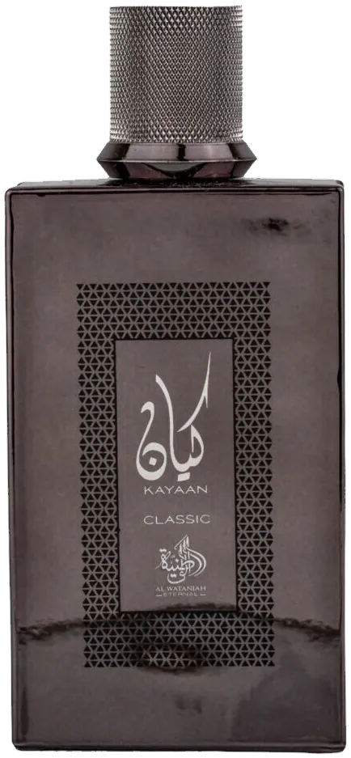

Kayaan Classic by Al Wataniah as an authentic decant — an Iris, Powdery, Woody, Violet, Oriental, Vanilla. inspired by Dior Homme Intense. Ships across India with free shipping over ₹999 on 2+ decants.
| Size | Price | Per ml |
|---|---|---|
| 3ml | ₹115 | ₹38 |
| 5ml | ₹165 | ₹33 |
| 7.5ml | ₹249 | ₹33 |
| 10ml | ₹309 | ₹31 |
| 20ml | ₹565 | ₹28 |
| 30ml | ₹799 | ₹27 |
Currently in stock for decants.
Copy your choice and message us on WhatsApp — we confirm stock and payment instantly.
Order on WhatsAppCall +91 93555 33509Notes / profile: Iris, Powdery, Woody, Violet, Oriental, Vanilla.
Best for: Fall / Winter seasons, day, for daily, office, date-night, cold, mild weather.
Mood: Confident, Elegant.
Reminds me of: Dior Homme Intense.
References: Fragrantica Parfumo
Learn how this decant is filled and verified.
Season: Fall, Winter.
Occasion: Daily, Office, Date-Night.
Time of day: Day.
Weather: Cold, Mild.
Fragrance family: Oriental, Vanilla.
Made for: Men.
A 3ml decant is the smallest way to try this scent before committing to a larger size. New to decants? Read the decant vs full bottle guide, or see how to make perfume last longer.
It is a high-quality interpretation inspired by Dior Homme Intense. Perfume enthusiasts in India often pick it as an affordable alternative to that profile.
IRAM Perfume sells authentic decants of Kayaan Classic by Al Wataniah at 3ml ₹115, 5ml ₹165, 7.5ml ₹249, 10ml ₹309, 20ml ₹565 and 30ml ₹799. Shipping is free on 2-decant orders above ₹999. Full bottles are available on request.
A men's fragrance, it works best during Fall / Winter seasons, day, for daily, office, date-night, cold, mild weather. It leans confident,elegant in character with an Iris, Powdery, Woody, Violet, Oriental, Vanilla profile.